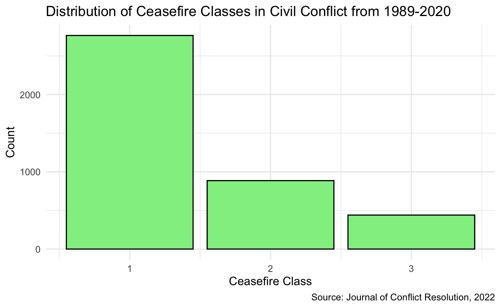
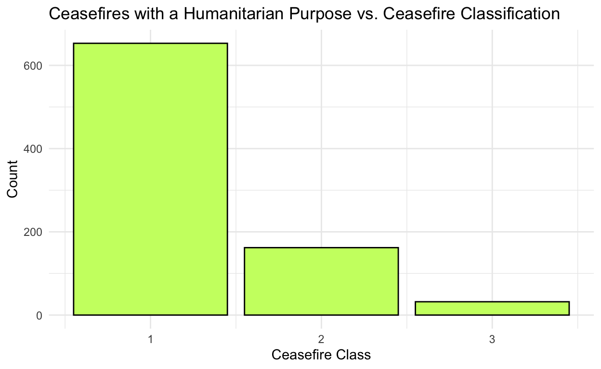
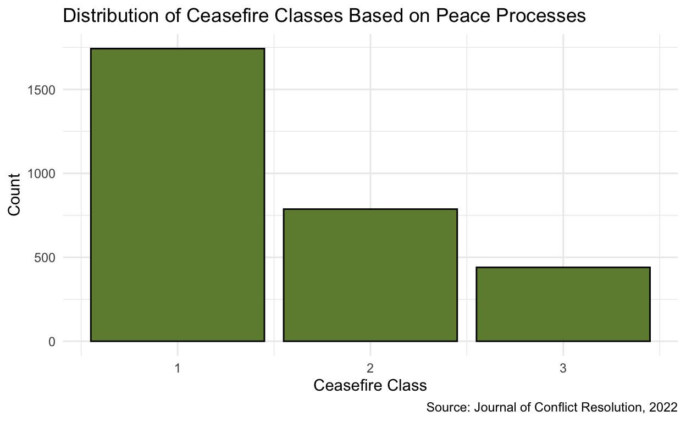

Analyzing global ceasefires and their determinants
Our current sociopolitical moment is unfortunately shaped by global violence that permeates across borders, directly affecting communities who do not have the ability fight back or speak against violence without having their safety threatened. One of the most important resources that can help curb the negative effects of global violence is humanitarian aid. Organizations such as the Red Cross and the United Nations are devoted to distributing life saving aid to countries impacting by war and displacement, and have shown the impact of humanitiarianism all over the world. Beyond humanitarian aid, ceasefires are also an integral method to effectively stop violence from continuing. Ceasefires are described as temporary halts of violence that are meant to allow for the involved parties to be able to come together and discuss pathways towards peace and away from continued hostilities. Ceasefires can serve as symbolic signs of diplomacy and can help develop positive working relationships for nations as well. Most importantly though, both humanitarian aid and ceasefires foreground the people most impacted by global violence: the families, the children, who cannot speak up for themselves. Such processes become more than symbolic; sometimes they entail a life or death situation, and need to be discussed more within the geopolitical spaces. My research question I am interested in unpacking is: does the the dissemination of humanitarian aid impact the class of ceasefire administered? I plan to examine how the delivery of life-saving or relief-distribution aid impacts the depth of a ceasefire, which ranges from the cessation of hostilities to a definitive ceasefire. I hypothesize that, if humanitarian aid is the reason behind the call for a ceasefire, then the class of ceasefire would be one that demands the cessation of hostilities with compliance mechanism(s). During times of heightened conflict, I would imagine that it is in the best interest of most, if not all, the parties at-odds to ensure that their respective communities are safe and taken care of—which is why the distribution of humanitarian aid so important. However, because a socio-political tension has the ability to physically tear communities apart, I would not be surprised if even the spread of life saving resources weren’t enough to demand a definitive ceasefire for all the parties involved. I believe that this is an important hypothesis to examine, because illustrating the impact that humanitarian aid has on halting civil conflict has the ability to inform social scientists regarding the depth of civil conflict in global communities. If the dissemination of life-saving aid is not enough for a full and total ceasefire to commence, then there are serious problems we must reckon with if we want to help reform our world for the better.
The data set I will be using is the ETH/PRIO Civil Conflict Ceasefire Dataset from the Journal of Conflict Resolution, 2022. In order to measure and classify the ceasefires in this dataset, the researchers relied on a global news database, Factiva, which contains more than 1.8 billion news articles. Researchers then used a variety of search strings,specific keywords and topics that narrow the sources you can pull from, to focus on countries that have experienced at least one civil conflict between 1989-2020. Then, human coders went through these articles to identify for any ceasefire. If a ceasefire was identified, the coders took note various identification variables that help describe the purpose, location, and other important characteristics of the ceasefire. My sample is comprised of all ceasefires in civil conflict between 1989 and 2023, including multilateral, bilateral, and unilateral agreements. The explanatory variable of interest is whether ceasefire had a humanitarian purpose. The variable is coded =1 for a with humanitarian purpose and =0 for ceasefires without humanitarian purpose. The outcome variable in this instance would be the class of ceasefire administered. The variable is coded =1 for a cessation of hostilities, =2 for cessation of hostilities with mechanism(s), and =3 for a definitive ceasefire. For example, if a ceasefire was classified as =2, then there might be a temporary halt of violence, but nothing that indicates progress towards peace nor restoration for any of the parties involved. The research design in this data set would cross-sectional, because it shows the characteristics of a ceasefires each year. It wouldn’t be before and after nor difference in differences because there is not a singular intervention that is the central focus of the study. Meaning that there is not a treatment or control group that could provide more room to analyze a specific variable that impacted ceasefires that the researchers implemented.
First, let’s load the necessary packages and dataset into R.
ceasefire <- read_csv("data/CFD.csv")Then, I am going to visualize this dependent variable, ceasefire_class, using a bar graph.
ggplot(ceasefire, aes(x = ceasefire_class)) +
geom_bar(fill = "lightgreen", color = "black") +
labs(title = "Distribution of Ceasefire Classes in Civil Conflict from 1989-2020",
x = "Ceasefire Class",
y = "Count",
caption = "Source: Journal of Conflict Resolution, 2022") +
theme_minimal()
First, we want to filter the data to only focus on ceasefires that were called for humanitarian purposes.
humanitarian_purpose <- ceasefire |>
filter (p_humanitarian == 1)
humanitarian_purpose# A tibble: 847 × 87
cc cf_id uniq_id location region link ucdp_actor_id actor_name
<dbl> <dbl> <dbl> <chr> <dbl> <dbl> <dbl> <chr>
1 70 1 70001 Mexico 5 0 10 Governmen…
2 92 4 92004 El Salva… 5 0 755 FMLN
3 92 7 92007 El Salva… 5 0 755 FMLN
4 92 16 92016 El Salva… 5 0 755 FMLN
5 93 16 93016 Nicaragua 5 0 5803 Recontra
6 100 9 100009 Colombia 5 0 744 ELN
7 100 9 100009 Colombia 5 0 17 Governmen…
8 100 33 100033 Colombia 5 0 744 ELN
9 343 3 343003 Macedonia 1 0 47 Governmen…
10 343 4 343004 Macedonia 1 0 47 Governmen…
# ℹ 837 more rows
# ℹ 79 more variables: ucdp_acd_id <dbl>, ucdp_dyad <dbl>,
# pax_id <dbl>, cf_dec_yr <dbl>, cf_dec_month <dbl>,
# cf_dec_day <dbl>, cf_effect_yr <dbl>, cf_effect_month <dbl>,
# cf_effect_day <dbl>, evidence_onset <lgl>, side <dbl>,
# partial <dbl>, written <dbl>, fixed <dbl>, fixed_time <chr>,
# nsa_frac <dbl>, p_humanitarian <dbl>, p_peaceprocess <dbl>, …Now that we only have ceasefires called with humanitarian purposes, we can then visualize its relationship to the specific classes of ceasefires — the main analysis.
human_bar <- ggplot(humanitarian_purpose, aes(x = ceasefire_class)) +
geom_bar(fill = "darkolivegreen1", color = "black") +
labs(x = "Ceasefire Class",
y = "Count",
title = "Ceasefires with a Humanitarian Purpose vs. Ceasefire Classification") +
theme_minimal()
human_bar
My primary focus for this analysis was on the p_humanitarian variable’s relationship with the speciifc classifications of ceasefires within the data set. This bar graph illustrates the relationship between ceasefires with humanitarian purposes and their respective ceasefire classification. A ceasefire class of 1 represents a ceasefire with “cessation of hostilities”. A ceasefire class of 2 represents a ceasefire with “cessation of hostilities with compliance mechanism(s)”. A ceasefire class of 3 represents a “definitive ceasefire”. This data visualization does not completely align with my hypothesis, because there is an overwhelming majority of ceasefires with a class of 1 that were called with a humanitarian purpose. I thought that there would be more ceasefires with a class of 2 called with a humanitarian purpose, but I was clearly mistaken. My graph illuminates the detrimental fact that humanitarian aid dissemination may not have as great of an impact on the permanent halt to geo-political violence as I thought it would.
I am going to do the same thing, but this time with another variable in the dataset: p_peaceprocess.
peace_process <- ceasefire |>
filter (p_peaceprocess == 1)
peace_process# A tibble: 2,970 × 87
cc cf_id uniq_id location region link ucdp_actor_id actor_name
<dbl> <dbl> <dbl> <chr> <dbl> <dbl> <dbl> <chr>
1 70 1 70001 Mexico 5 0 10 Governmen…
2 70 2 70002 Mexico 5 0 767 EZLN
3 70 3 70003 Mexico 5 0 767 EZLN
4 70 4 70004 Mexico 5 1 767 EZLN
5 70 5 70005 Mexico 5 1 767 EZLN
6 70 6 70006 Mexico 5 1 767 EZLN
7 70 7 70007 Mexico 5 0 10 Governmen…
8 90 1 90001 Guatemala 5 0 732 URNG
9 90 3 90003 Guatemala 5 0 732 URNG
10 90 4 90004 Guatemala 5 0 732 URNG
# ℹ 2,960 more rows
# ℹ 79 more variables: ucdp_acd_id <dbl>, ucdp_dyad <dbl>,
# pax_id <dbl>, cf_dec_yr <dbl>, cf_dec_month <dbl>,
# cf_dec_day <dbl>, cf_effect_yr <dbl>, cf_effect_month <dbl>,
# cf_effect_day <dbl>, evidence_onset <lgl>, side <dbl>,
# partial <dbl>, written <dbl>, fixed <dbl>, fixed_time <chr>,
# nsa_frac <dbl>, p_humanitarian <dbl>, p_peaceprocess <dbl>, …peace_bar <- ggplot(peace_process, aes(x = ceasefire_class)) +
geom_bar(fill = "darkolivegreen4", color = "black") +
labs(x = "Ceasefire Class",
y = "Count",
title = "Distribution of Ceasefire Classes Based on Peace Processes",
caption = "Source: Journal of Conflict Resolution, 2022"
) +
theme_minimal()
peace_bar
Something that I realized while parsing through this data was the possibility for confounding variables. One of which was the p_peaceprocess variable which denotes ceasefires called specifically for thesake of dismantling the status of war, signaling desire for dialogue and/or peace, or re-committing to an earlier agreement. This bar graph illustrates the relationship between the respective ceasefire classes and whether or not the purpose of the ceasefire was to advance peace. This purpose can look like reverting back to a previous agreement, making advances to halt war and/or violence, and additional movements toward peace for all the parties involved. Evidently, there seems to be more ceasefires that were called with peaceful intentions compared to humanitarian-specific intentions (as shown in my first bar graph). The vast amount of ceasefires called with a peaceful purpose resulted in a cessation of hostilities, rather than a complete end to the violence (a level three ceasefire). However, something that I find interesting is the potential for humanitarian aid distribution under the peaceful conditions that ceasefires are called for.This is not to conflate peace with humanitarianism, but peaceful intentions could set the foundation for potential humanitarian aid to be distributed.
Let’s interpret the stastical significance of both the main coefficient of interest (p_humanitarian) as well as p_peaceprocess.
library(modelsummary)
library(broom)
lin_reg <- lm(ceasefire_class ~ p_humanitarian + p_peaceprocess, data = ceasefire)
tidy(lin_reg) |>
knitr::kable(digits = 3)| term | estimate | std.error | statistic | p.value |
|---|---|---|---|---|
| (Intercept) | 1.107 | 0.022 | 49.801 | 0.000 |
| p_humanitarian | -0.044 | 0.026 | -1.655 | 0.098 |
| p_peaceprocess | 0.460 | 0.024 | 19.251 | 0.000 |
The coefficient for p_humanitarian is -.044, which means that when there is a humanitarian purpose behind a ceasefire, the expected classification of the ceasefire decreases by .044 units. This means that ceasefires with a humanitarian purpose are more likely to be associated with a lower ceasefire class (closer to a level 1 which is “Cessation of Hostilities”) rather than a cessation of hostilities with compliance mechanisms or a definitive ceasefire (levels 2 and 3, respectively). The p-value for p_humanitarian is .098, which, assuming the alpha is 0.05, means that we do not reject the null hypothesis. p_humanitarian is not statistically significant when the alpha is 0.05, meaning that there is not sufficient evidence for me to conclude a causual effect between this variable and the depth of a ceasefire called.
The coefficient for p_peaceprocess is .460, which means that when a peace process was present during the call for a ceasefire, the expected classification of a ceasefire increases by .460 units. This suggests that ceasefires called with an intention to further the peacemaking process are more likely to be associated with a higher level ceasefire class (levels 2 or 3). The p-value for p_peaceprocess was 0, which is highly statistically significant. The peace process is an important factor in the depth of a ceasefire is called, which leads me to to believe there is grounds for establishing a causal relationship between the two variables.
Based on both the bar plots and regression table that I made, I conclude that there is not a strong causal relationship between the level of ceasefire that is called and its humanitarian intentions. In the second bar plot that I created, I learned that there were not that many ceasefires with compliance mechanisms (level 2) or definitive ceasefires (level 3) called with humanitarian purposes, compared to the vast majority of ceasefires with humanitarian purposes classified as “cessation of hostilities”. Given these results, I didn’t find much support for my hypothesis, as I predicted that there would be a majority of class 2 ceasefires called with humanitarian intentions, which just wasn’t the case. Some limitations to my analysis would be the the prescence of confounders, such as the variable p_peaceprocess which I actually visualized in some ways. I think variables such as p_peaceprocess could serve as a confounder, because negotiating a path towards peace could impact whether or not humanitarian aid get’s distributed in the first place. It would be difficult to disseminate aid in a place that is still simmering with conflict, with serious worries about the aid reaching the people who need it the most. While humanitarian aid may not have been the documented intention, under peaceful engagement with a ceasefire, there may be a future where that integral aid is able to reach people safely. If I had more resources to improve my analysis, I would improve my analysis by interviewing people impacted by various classes of ceasefires to understand the conditions before and after a ceasefire is called. I think it would be really meaningful to understand where political leaders draw the line and stop the violence from pursuing. Being able to interview people directly impacted by conflict, and in turn ceasefires, would bring an important perspective to my analysis when understanding the necessity of both humanitarian aid and peace processes when advocating against violent global conflict.